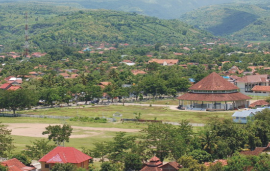
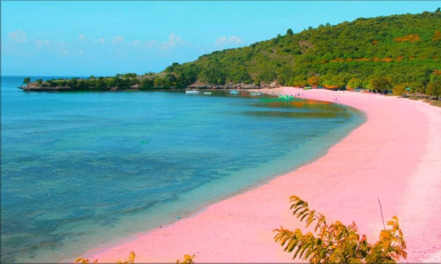

Sejarah
Kabupaten Bima berdiri pada tanggal 5 Juli 1640 M, ketika Sultan Abdul Kahir dinobatkan sebagai Sultan Bima I yang menjalankan Pemerintahan berdasarkan Syariat Islam. Peristiwa ini kemudian ditetapkan sebagai Hari Jadi Bima yang diperingati setiap tahun. Bukti-bukti sejarah kepurbakalaan yang ditemukan di Kabupaten Bima seperti Wadu Pa’a, Wadu Nocu, Wadu Tunti (batu bertulis) di dusun Padende Kecamatan Donggo menunjukkan bahwa daerah ini sudah lama dihuni manusia. Dalam sejarah kebudayaan penduduk Indonesia terbagi atas bangsa Melayu Purba dan bangsa Melayu baru. Demikian pula halnya dengan penduduk yang mendiami Daerah Kabupaten Bima, mereka yang menyebut dirinya Dou Mbojo, Dou Donggo yang mendiami kawasan pesisir pantai. Disamping penduduk asli, juga terdapat penduduk pendatang yang berasal dari Sulawesi Selatan, Jawa, Madura, Kalimantan, Nusa Tenggara Timur dan Maluku.
Kerajaan Bima dahulu terpecah–pecah dalam kelompok-kelompok kecil yang masing-masing dipimpin oleh Ncuhi. Ada lima Ncuhi yang menguasai lima wilayah, yaitu:
- Ncuhi Dara, memegang kekuasaan wilayah Bima Tengah
- Ncuhi Parewa, memegang kekuasaan wilayah Bima Selatan
- Ncuhi Padolo, memegang kekuasaan wilayah Bima Barat
- Ncuhi Banggapupa, memegang kekuasaan wilayah Bima Utara
- Ncuhi Dorowani, memegang kekuasaan wilayah Bima Timur
Kelima Ncuhi ini hidup berdampingan secara damai, saling hormat menghormati dan selalu mengadakan musyawarah mufakat bila ada sesuatu yang menyangkut kepentingan bersama. Dari kelima Ncuhi tersebut yang bertindak selaku pemimpin dari Ncuhi lainnya adalah Ncuhi Dara. Pada masa-masa berikutnya, para Ncuhi ini dipersatukan oleh seorang utusan yang berasal dari Jawa. Menurut legenda yang dipercaya secara turun temurun oleh masyarakat Bima, cikal bakal Kerajaan Bima adalah Maharaja Pandu Dewata yang mempunyai 5 orang putra, yaitu:
- Darmawangsa
- Sang Bima
- Sang Arjuna
- Sang Kula
- Sang Dewa
Salah seorang dari lima bersaudara ini yakni Sang Bima berlayar ke arah timur dan mendarat di sebuah pulau kecil di sebelah utara Kecamatan Sanggar yang bernama Satonda. Sang Bima inilah yang mempersatukan kelima Ncuhi dalam satu kerajaan, yakni Kerajaan Bima dan Sang Bima sebagai raja pertama bergelar Sangaji. Sejak saat itulah Bima menjadi sebuah kerajaan yang berdasarkan Hadat dan saat itu pulalah Hadat Kerajaan Bima ditetapkan berlaku bagi seluruh rakyat tanpa kecuali. Hadat ini berlaku terus menerus dan mengalami perubahan pada masa pemerintahan raja Ma Wa’a Bilmana. Setelah menanamkan sendi-sendi dasar pemerintahan berdasarkan Hadat, Sang Bima meninggalkan Kerajaan Bima menuju timur, tahta kerajaan selanjutnya diserahkan kepada Ncuhi Dara hingga putra Sang Bima yang bernama Indra Zamrud sebagai pewaris tahta datang kembali ke Bima pada abad XIV/XV.
Geografis

Letak
Kabupaten Bima merupakan salah satu Daerah Otonom di Provinsi Nusa Tenggara Barat, terletak di ujung timur dari Pulau Sumbawa bersebelahan dengan Kota Bima (pecahan dari Kota Bima). Secara geografis Kabupaten Bima berada pada posisi 117°40”-119°10” Bujur Timur dan 70°30” Lintang Selatan.
Topografi
Secara topografis wilayah Kabupaten Bima sebagian besar (70%) merupakan dataran tinggi bertekstur pegunungan sementara sisanya (30%) adalah dataran. Sekitar 14% dari proporsi dataran rendah tersebut merupakan areal persawahan dan lebih dari separuh merupakan lahan kering. Oleh karena keterbatasan lahan pertanian seperti itu dan dikaitkan pertumbuhan penduduk kedepan, akan menyebabkan daya dukung lahan semakin sempit. Konsekuensinya diperlukan transformasi dan reorientasi basis ekonomi dari pertanian tradisional ke pertanian wirausaha dan sektor industri kecil dan perdagangan. Dilihat dari ketinggian dari permukaàn laut, Kecamatan Donggo merupakan daerah tertinggi dengan ketinggian 500 m dari permukaan laut, sedangkan daerah yang terendah adalah Kecamatan Sape dan Sanggar yang mencapai ketinggian hanya 5 m dari permukaan laut.
Di Kabupaten Bima terdapat lima buah gunung, yakni:
- Gunung Tambora di Kecamatan Tambora
- Gunung Sangiang di Kecamatan Wera
- Gunung Maria di Kecarnatan Wawo
- Gunung Lambitu di Kecamatan Lambitu
- Gunung Soromandi di Kecamatan Donggo, merupakan gunung tertinggi di wilayah ini dengan ketinggian 4.775 m.
Batas Wilayah
Kabupaten Bima terletak di bagian timur Pulau Sumbawa dengan batas-batas wilayah sebagai berikut:
- Utara: Laut Flores
- Selatan: Samudera Hindia
- Timur: Selat Sape
- Barat: Kabupaten Dompu
Pemekaran 2007
Pada tahun 2007 terjadi pemekaran wilayah dengan penambahan 4 kecamatan baru, yaitu:
- Parado
- Lambitu
- Soromandi
- Palibelo
Dengan adanya pemekaran ini, sekarang Kabupaten Bima memiliki jumlah kecamatan sebanyak 18 wilayah.
Luas Wilayah
Luas wilayah setelah pembentukan Daerah Kota Bima berdasarkan Undang-undang Nomor 13 tahun 2002 adalah seluas 437.465 Ha atau 4.394,38 Km2 (sebelum pemekaran 459.690 Ha atau 4.596,90 Km²) dengan jumlah penduduk 419.302 jiwa dengan kepadatan rata-rata 96 jiwa/Km2
Iklim dan Cuaca
Wilayah Kabupaten Bima beriklim tropis dengan rata-rata curah hujan relatif pendek. Keadaan curah hujan tahunan rata-rata tercatat 58.75 mm, maka dapat disimpulkan Kabupaten Bima adalah daerah berkategori kering sepanjang tahun yang berdampak pada kecilnya persediaan air dan keringnya sebagian besar sungai. Curah hujan tertinggi pada bulan Februari tercatat 171 mm dengan hari hujan selama 15 hari dan musim kering terjadi pada bulan Juli, Agustus dan September dimana tidak tejadi hujan. Kabupaten Bima pada umumnya memiliki drainase yang tergenang dan tidak tergenang. Pengaruh pasang surut hanya seluas 1.085 Ha atau 0,02% dengan lokasi terbesar di wilayah pesisir pantai. Sedangkan luas lokasi yang tergenang terus menerus adalah seluas 194 Ha, yaitu wilayah Dam Roka, Dam Sumi dan Dam Pelaparado, sedangkan Wilayah yang tidak pernah tergenang di Kabupaten Bima adalah seluas 457.989 Ha.
Wisata
Nusa Tenggara Barat menjadi salah satu provinsi di Indonesia yang menyimpan potensi wisata yang sangat besar. Keberagaman budaya dan keindahan alamnya menarik para wisatawan untuk berkunjung lagi.
Salah satu daerah tujuan wisata yang diunggulkan adalah Bima. Kabupaten yang berada di Pulau Sumbawa di bagian timur ini terus mengembangkan berbagai destinasi wisata unggulan.
Tidak hanya destinasi wisata alam, daya tarik wisata budaya pun tak kalah menarik para wisatawan. Hal ini tak lepas dari latar belakang Kota Bima yang pada jaman dahulu merupakan pusat dari Kesultanan Bima. Jika Anda ingin berkunjung, berikut adalah beberapa rekomendasi destinasi terbaik untuk Anda.
Pulau Kelapa
Destinasi pertama yang bisa Anda kunjungi saat berada di Bima adalah Pulau Kelapa. Disini Anda bisa menikmati esksotisme pantai dengan air laut yang jernih serta pasir lembut mengitari pulau. Meskipun untuk mengaksesnya cukup sulit, Anda tidak akan menyesal mengunjungi pantai ini.
Jika ingin menikmati pantai Pulau Kelapa dengan cara berbeda, Anda bisa melakukan treking ke atas bukit di pantai ini dan nikmati cantiknya pemandangan sunset. Lautnya yang jernih juga bisa Anda nikmati dari bawah laut dengan melakukan snorkeling.
Beriku ini adalah rute bagi anda yang ingin ke pulau kelapa
Pantai Pink

Tak jauh dari Pulau Kelapa, Anda juga bisa menikmati destinasi menarik lainnya di Bima, yaitu Pantai Pink. Sesuai namanya, pantai ini memiliki keunikan berupa pasir pantainya yang berwarna pink.
Tidak hanya warna pasir pantainya saja, Pantai Pink ini juga memiliki air laut yang jernih. Untuk mencapai pantai ini memang sedikit sulit. Anda harus naik bis dulu dari Kota Bima, setelah itu naik perahu hingga ke Pantai Pink.
Beriku ini adalah rute bagi anda yang ingin ke pantai pink